코드 모드는 어디서 왔나요
영상은 결과부터 보여 줘요. 같은 버그를 Code Mode를 끄고 한 번, 켜고 한 번 고치게 했더니 쓴 토큰이 29만에서 13만 3천으로 줄었어요. 위쪽 회색 막대가 끈 쪽, 아래 주황 막대가 켠 쪽이에요.
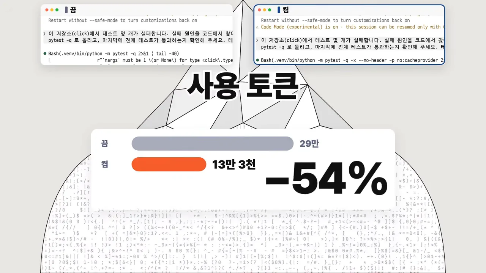
2025년 Cloudflare에서 시작된 생각
이 생각은 예전부터 있었어요. 2025년 9월 Cloudflare가 블로그 글 제목에 Code Mode라는 이름을 처음 썼어요. 그때 다룬 건 MCP(Model Context Protocol)였어요. AI(Artificial Intelligence)를 다른 앱이나 서비스에 이어 주는 연결 방식이라, 연결이 늘수록 AI가 알고 있어야 할 도구도 늘어나요.
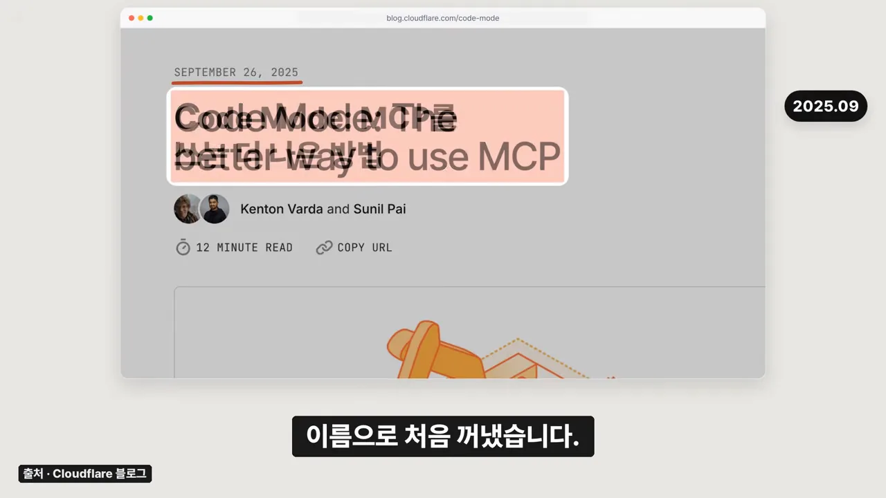
같은 해 11월 Anthropic도 엔지니어링 블로그에 도구 결과를 코드 안에서 처리하자는 글을 썼고, 그 글에 Cloudflare의 Code Mode가 이름으로 나와요. 그리고 이번에 Claude Code 안에 공식 실험 기능으로 들어왔어요. 아래 변경 기록의 버전 번호 2.1.323과 날짜 November 12, 2026을 보면 돼요.
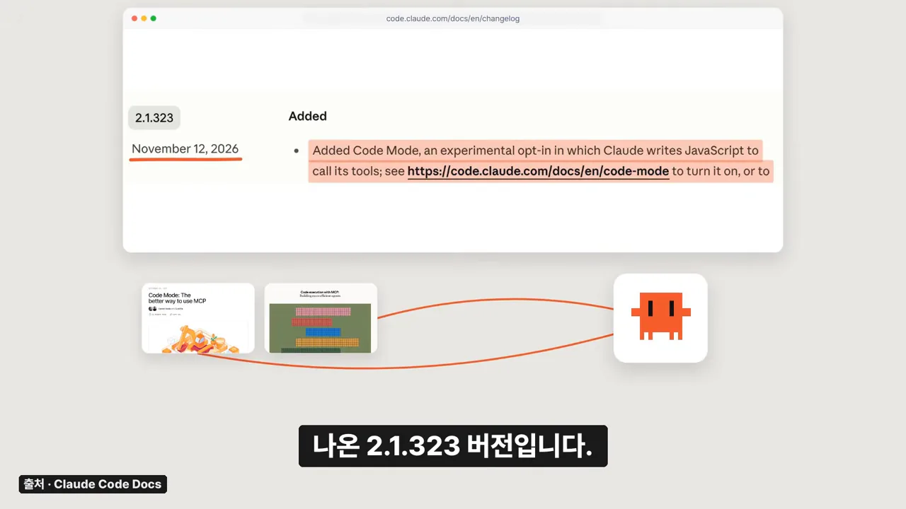
날짜만 이어 보면 흐름이 보여요. Cloudflare가 이름을 붙이고, 두 달 뒤 Anthropic이 같은 생각을 정리하고, 1년 뒤 Claude Code에 실험 기능으로 들어왔어요. 일주일 뒤에는 첫 개선판도 나왔어요.
timeline 2025년 9월 : Cloudflare 블로그에 Code Mode 이름 처음 등장 2025년 11월 : Anthropic 엔지니어링 글, 도구 결과를 코드 안에서 처리 2026년 11월 12일 : Claude Code 2.1.323에 실험 기능으로 추가 2026년 11월 19일 : 2.1.328에서 도구 설명을 줄여 토큰 사용 개선
도구를 하나씩 부르면 왜 토큰이 쌓일까요
Claude는 파일을 열고, 검색하고, 명령을 돌릴 때 도구를 불러요. "서버 로그에서 오류 원인을 찾아 고쳐 줘"라고 하면 먼저 검색 도구로 로그를 뒤지고, 찾아낸 줄들이 통째로 대화에 들어와요. 파일을 열면 파일 내용이, 테스트를 돌리면 그 결과가 하나씩 더 쌓여요. Claude가 지금 들고 읽는 이 대화 전체가 컨텍스트예요.
아래 그림의 Tool call 1, 2, 3이 도구를 한 번씩 부른 거예요. 가운데 투명한 상자가 대화이고, 도구를 부를 때마다 결과가 그 안에 차올라요.
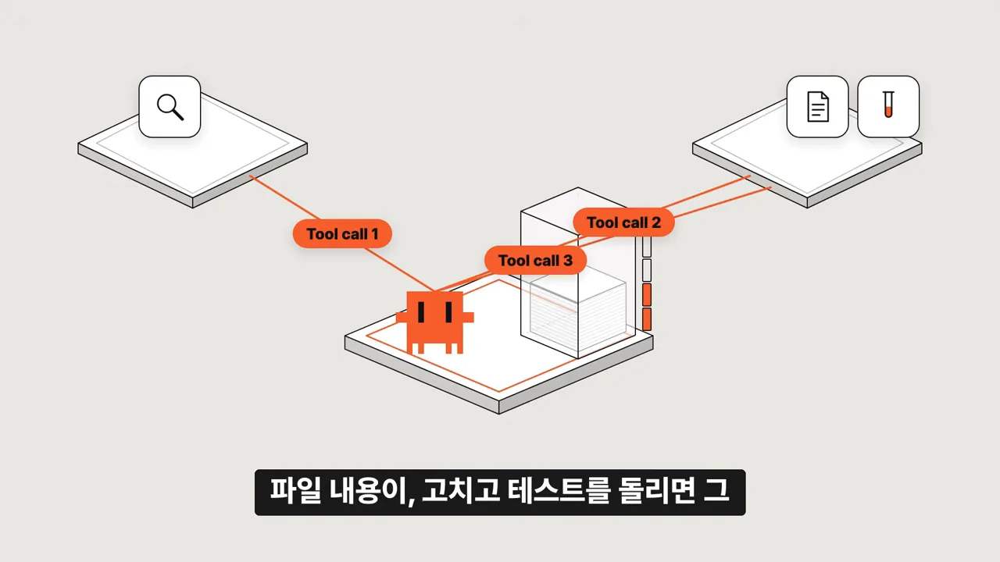
부담이 하나 더 있어요. Claude는 요청할 때마다 자기가 쓸 수 있는 도구들의 설명서도 같이 읽어요. 도구가 많을수록 설명서도 매번 무거워져요.
Code Mode를 켜면 바뀌는 것
Code Mode에서는 Claude가 도구를 하나씩 부르는 대신 JavaScript 코드를 직접 짜요. 아래 화면의 코드 세 줄이 검색(search), 파일 읽기(read), 고치기(edit)예요. 이 코드는 Claude Code가 세션 안에서 돌려요.
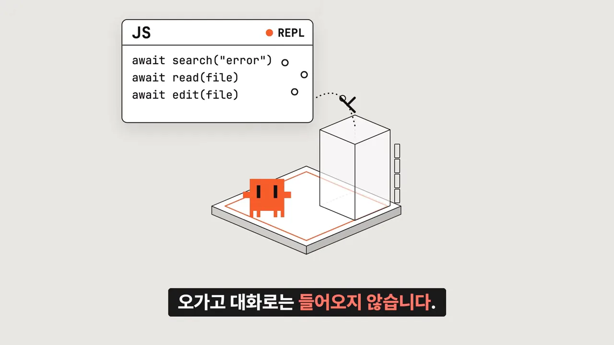
그래서 대화에는 Claude가 읽어야 할 마지막 결과만 남아요. 대화가 가벼워지니 다시 읽을 양도 줄어요. 영상은 엑셀에 빗대요. 지금까지는 셀을 하나씩 복사해 넣고 그때마다 결과를 확인했다면, Code Mode는 매크로를 짜서 버튼 한 번으로 돌리고 완성된 결과 시트 한 장만 받는 쪽이에요.
Cloudflare의 숫자: 117만 토큰이 약 1,000 토큰으로
Cloudflare가 나중에 자기 서비스에 이 방식을 써 봤을 때, 다뤄야 할 API(Application Programming Interface)가 2,500개가 넘었어요. 이걸 MCP 도구로 하나씩 넘기면 도구 설명만 117만 토큰이라 AI가 일을 시작하기도 전에 넘쳐요. 그래서 도구를 search()와 execute() 둘로 줄이고, AI가 코드로 필요한 API만 부르게 했어요. 아래 표의 Native MCP (full schemas) 줄과 맨 아래 Code Mode 줄을 비교해 보면 돼요.
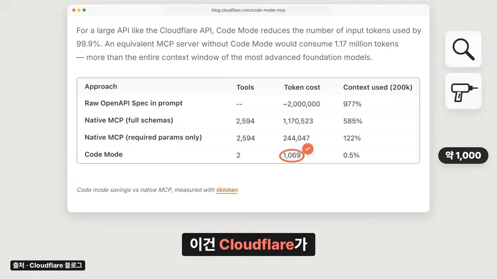
REPL 도구와 안전장치, 잘 맞는 일
Cloudflare는 MCP에만 이 방식을 썼지만, Claude Code의 Code Mode는 범위가 넓어요. MCP 도구는 물론 파일 읽기와 고치기, 명령 실행, 웹 호출까지 코드로 묶어요. 켜면 Claude가 짠 코드를 돌리는 도구 하나가 생기는데, 이름이 REPL(Read-Eval-Print Loop)이에요. 대화 화면에는 코드 대신 그 안에서 실행한 도구 호출 결과(파일 수정 내역 같은 것)만 보여요.
코드 안에서 위험한 명령을 돌리면요?
코드 안에 rm -rf ./build나 git push --force 같은 명령이 섞여 있으면 걱정될 수 있어요. 아래 그림에서 git status와 npm test는 문을 통과하지만, rm -rf는 거부 규칙(deny)에 막혀 X 표시가 붙어 있어요.
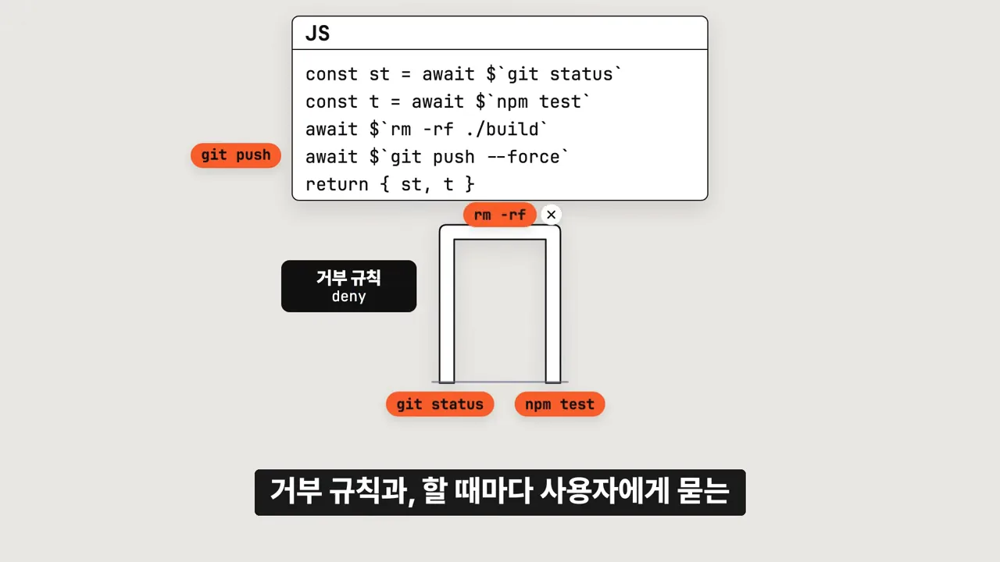
발표자가 켜 둔 세션에서도 코드 속 명령 하나에 승인 창이 그대로 떴어요. 더 꼼꼼히 보고 싶으면 물어보기 규칙에 REPL을 넣어요. 그러면 코드를 돌릴 때마다 승인을 받아요. 화면 오른쪽 아래 말풍선이 넣을 값이에요.
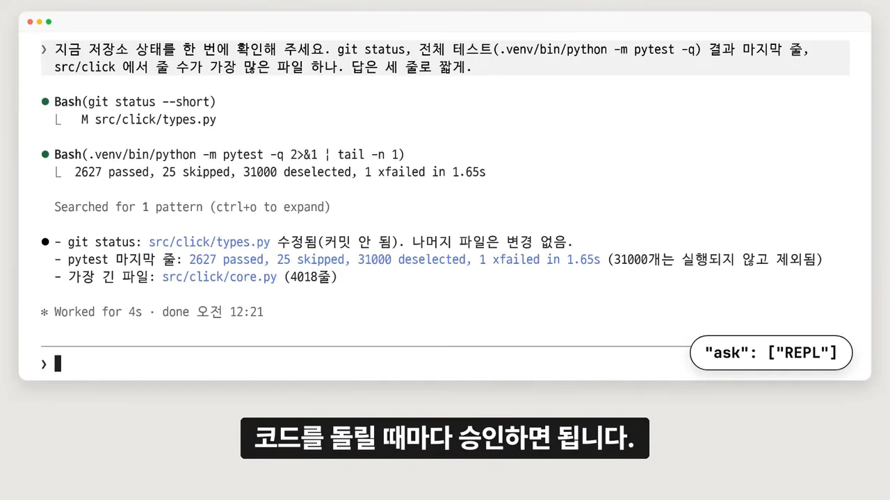
"ask": ["REPL"] 한 줄이면 코드 단위로 승인할 수 있어요. 영상 04:21에서 보기{
"permissions": {
"ask": ["REPL"]
}
}Code Mode에 잘 맞는 일 세 가지
Anthropic이 공식 문서에서 꼽은 건 세 가지예요. 아래 화면의 1, 2, 3번이에요.
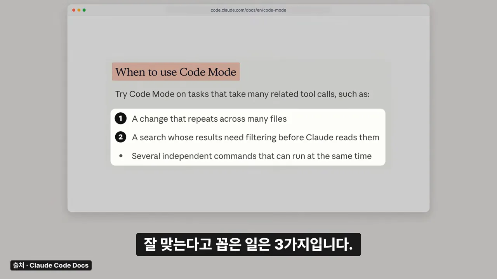
| 문서가 꼽은 일 | 영상이 든 예 |
|---|---|
| 여러 파일에 걸쳐 반복되는 변경 | 함수 이름 하나를 저장소 전체에서 바꾸기 |
| Claude가 읽기 전에 결과를 걸러야 하는 검색 | 긴 로그에서 오류 줄만 보기, 캠페인 결과 파일 여러 개를 합쳐 필요한 칸만 확인하기 |
| 동시에 돌릴 수 있는 서로 상관없는 명령 여러 개 | 저장소 상태 확인, 테스트, 줄 수 세기를 한꺼번에 |
내 일이 여기에 맞는지 헷갈리면 직접 비교해 보면 돼요. 아래 화면 오른쪽 메모가 영상이 권하는 비교 방법이에요. 같은 일을 두 번 돌리고, 한 번은 끄고 한 번은 켜고, /cost와 /context를 비교하고, 결과가 같은지도 확인해요.
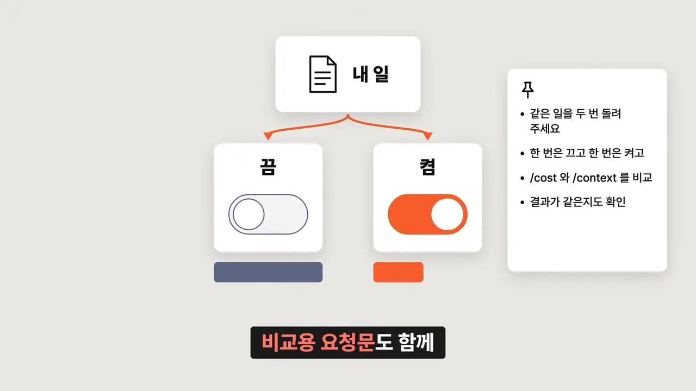
켜는 법과 Claude가 짠 코드 보기
준비물은 셋이에요. 터미널에서 쓰는 Claude Code, Claude 유료 구독이나 Console 계정, 그리고 Opus 5.5 같은 최신 모델이에요. 그다음 아래 순서대로 켜요.
- 버전이 2.1.323 이상인지 확인해요 — 터미널에서
claude update. 영상 화면은 이미 최신인 2.1.329였어요 - 환경 변수 한 줄을 넣어요 —
export CLAUDE_CODE_EXPERIMENTAL_CODE_MODE=1. 환경 변수는 프로그램을 실행하기 전에 미리 걸어 두는 설정이에요. - 매번 치기 번거로우면 사용자 설정 파일에 넣어요 —
~/.claude/settings.json의env에 같은 값. claude를 실행하고 확인 창에서 'Yes, turn on Code Mode'를 골라요 세션 위에 Code Mode (experimental) is on 줄이 떠요
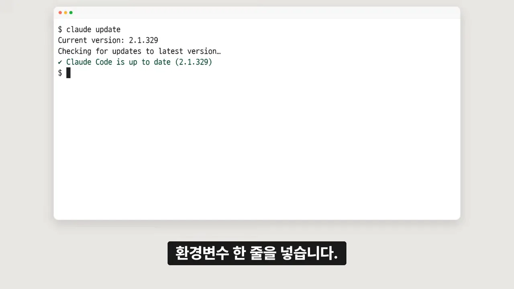
export CLAUDE_CODE_EXPERIMENTAL_CODE_MODE=1
claude설정 파일에 넣을 때는 어느 파일인지가 중요해요. 아래 화면 왼쪽은 사용자 설정 ~/.claude/settings.json이고, 오른쪽 자물쇠가 달린 쪽은 프로젝트 설정 .claude/settings.json이에요. 오른쪽 값에는 줄이 그어져 있어요.
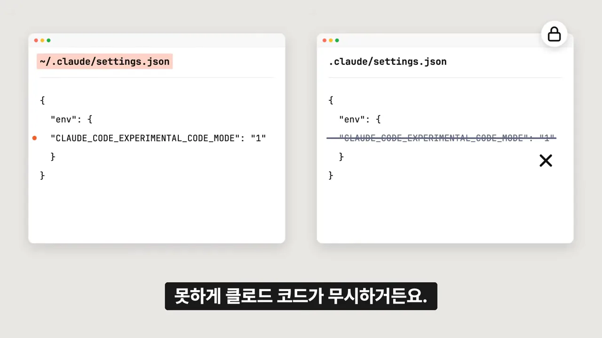
{
"env": {
"CLAUDE_CODE_EXPERIMENTAL_CODE_MODE": "1"
}
}처음 실행하면 확인 창이 떠요. 실험 기능이라 동작이 달라질 수 있다는 설명이 길게 나오고, 맨 아래 두 선택지 중 'Yes, turn on Code Mode'를 고르면 돼요.
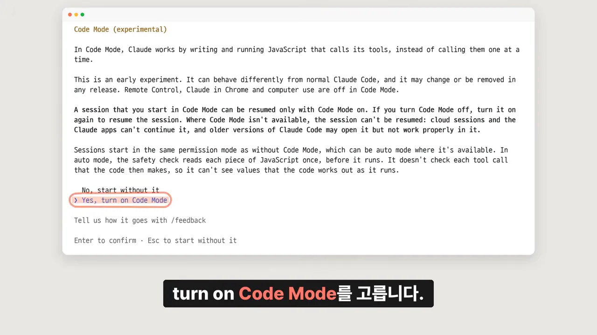
고르고 나면 Claude Code가 다시 시작되고, 세션 위쪽에 강조된 줄 'Code Mode (experimental) is on'이 떠요. 이게 켜졌다는 표시예요.
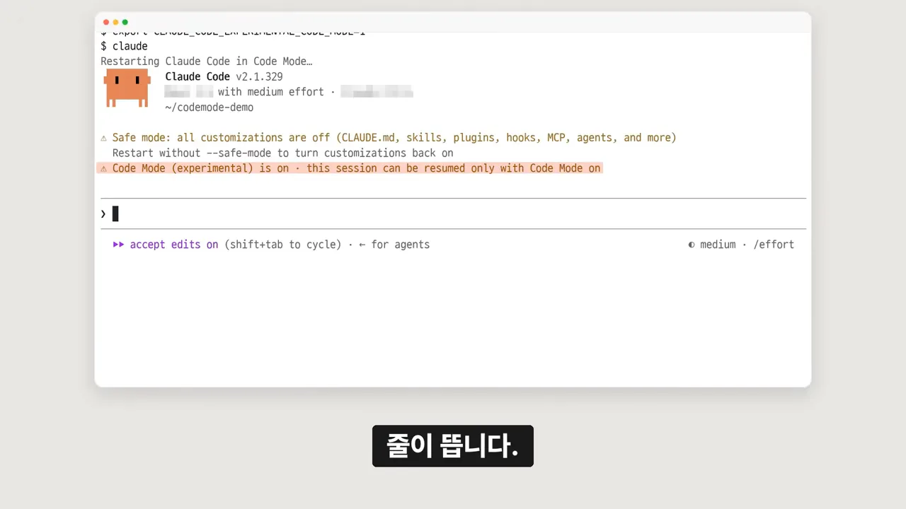
Claude가 짠 코드 들여다보기
발표자는 켜 둔 세션에 상관없는 일 셋을 한 번에 시켰어요. 저장소 상태(git status), 전체 테스트 결과의 마지막 줄, src/click에서 줄 수가 가장 많은 파일이에요. 대화 화면에는 코드가 안 보이고 도구 호출과 결과만 나와요. 이때 Ctrl+O로 기록 보기를 열면 접힌 Code 줄이 있고, Ctrl+E로 펼치면 돼요. 펼친 코드를 보면 여러 일을 동시에 시작하고 모두 끝날 때까지 기다리는 Promise.all 한 줄로 세 명령을 묶었어요.
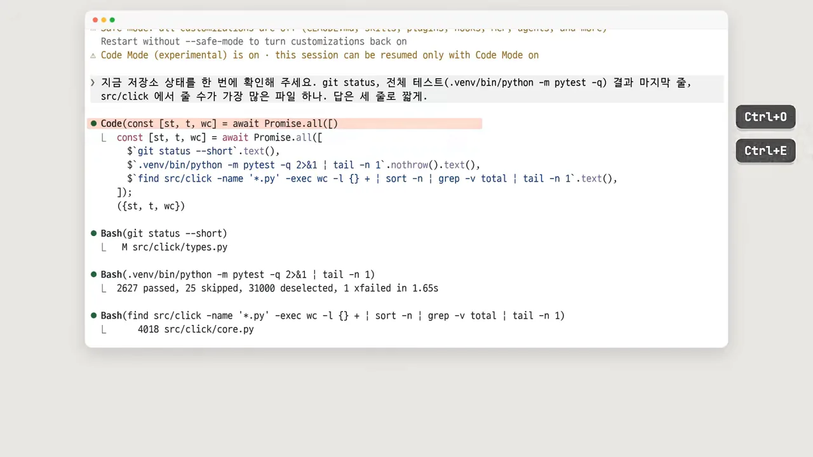
Promise.all 한 줄로 세 명령을 동시에 돌렸고, 세 명령 모두 성공해 결과만 대화로 돌아왔어요. 영상 06:02에서 보기끄고 켜서 비교한 결과와 앞으로
정말 줄어드는지 보려고 발표자는 Python 도구 click 저장소에 버그를 하나 일부러 심었어요. 증상은 테스트 8개 실패이고, 원인은 여러 파일을 따라가야 나와요. Opus 5.5 모델과 같은 요청으로 Code Mode만 끄고 켜서 두 번 돌렸어요.
두 번 다 같은 한 줄을 고쳤어요. 아래 화면 아래쪽 '수정' 칸에서 밑줄 친 if isinstance(item, (tuple, list)): 줄이 바뀐 곳이에요. 위쪽 요약에는 실패하던 테스트 8개를 고쳤고 전체 2,627개가 통과했다고 나와요.
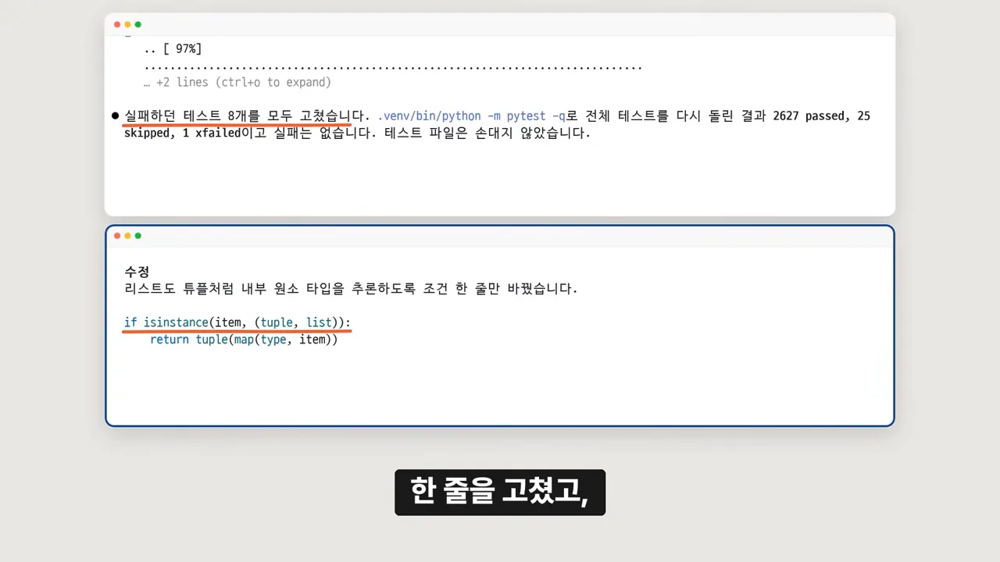
일하는 방식은 달랐어요. 아래 화면 위 창(끔) 오른쪽 위에는 'Tool call × 7', 아래 창(켬)에는 'REPL × 5 · Bash 5 · Read 1 · Edit 1' 배지가 붙어 있어요.
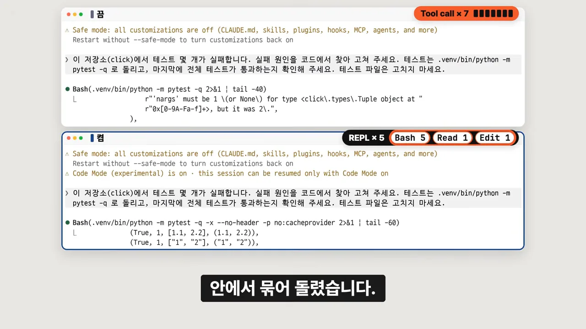
숫자로 본 차이
/context 화면에서는 두 줄이 강조돼 있어요. System tools(Claude가 매번 다시 읽는 도구 설명)는 24.0k에서 8.6k로, Messages(대화 메시지)는 17k에서 10.4k로 줄었어요.
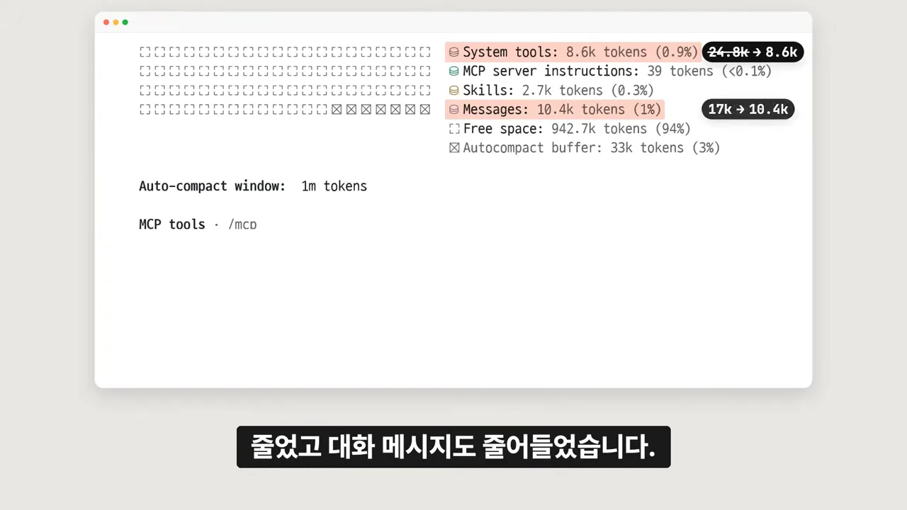
/cost 화면의 Estimated cost는 위(끔) $0.2440, 아래(켬) $0.1542예요. 오른쪽 막대는 걸린 시간 27초와 26초예요.
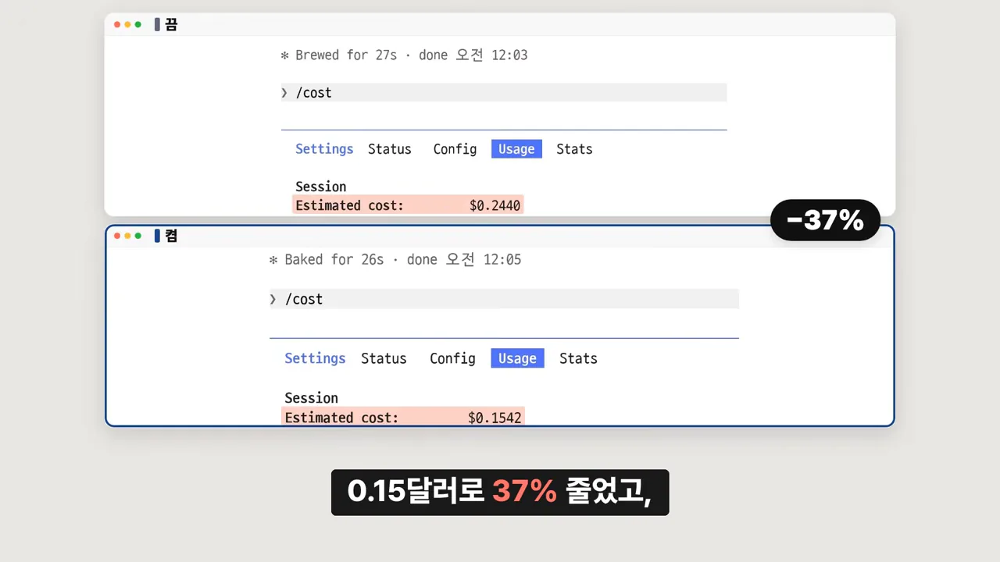
영상이 밝힌 다섯 숫자를 한 그림에 모았어요. 줄마다 끈 쪽을 테두리만 있는 막대 길이로 두고, 켠 쪽이 그 몇 퍼센트인지 색칠한 막대로 그렸어요.
다른 제품에서도 같은 방향
같은 생각을 다른 제품에 적용한 결과도 이미 나와 있어요.
| 어디서 | 무슨 일 | 전 | 후 |
|---|---|---|---|
| Claude Code Code Mode (영상 실험) | click 저장소 버그 수정 | 29만 토큰 | 13만 3천 토큰 (−54%) |
| Anthropic 엔지니어링 글 (2025년 11월) | Google Drive 회의 문서를 Salesforce로 옮기기 | 15만 토큰 | 2,000 토큰 |
| Datadog MCP 서버 | 모델 4개 평균 입력 토큰 | 15만 9천 | 4만 3천 |
Datadog은 서버와 서비스 상태를 지켜보는 서비스를 만드는 회사예요. 자체 MCP 서버에 코드 실행 기능을 넣고 따로 평가했어요. 아래 그래프는 왼쪽부터 정답률, 작업당 입력 토큰, 작업당 도구 호출 수예요. 파란 막대가 기존, 보라 막대가 코드 실행이에요.
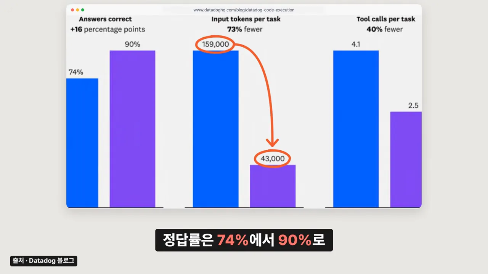
어디부터 켜고, 어떻게 끌까요
제품도 작업도 다르지만 방향은 같아요. 결과를 코드 안에서 거르고 필요한 것만 대화로 가져와요. 어디서부터 켤지는 간단해요. Claude가 도구를 여러 번 부르는 작업부터 시작하면 돼요. 내 일에 맞는지는 /cost와 /context 두 화면만 비교하면 돼요. 끄고 싶을 때는 환경 변수 값을 지우거나 0으로 바꿔요.
기능은 계속 다듬어지고 있어요. 아래 변경 기록에서 2.1.328(November 19, 2026)의 'Improved Code Mode's token use with shorter tool descriptions' 줄을 보면, 나온 지 일주일 만에 도구 설명을 짧게 줄여 토큰 사용을 더 줄였어요.
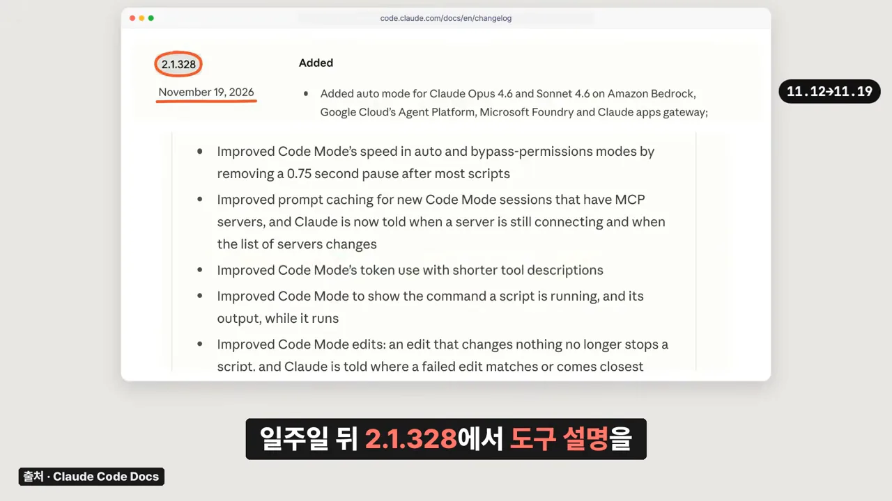
발표자는 많은 사람이 써 보고 별 문제가 없으면 언젠가 기본값으로 켜질 수도 있다고 봐요. 겉으로는 환경 변수 한 줄로 켜는 조용한 실험 기능이지만, 그 아래에서는 Claude가 도구를 하나씩 부르던 방식에서 코드를 짜서 묶어 부르는 방식으로 바뀌고 있다는 거예요.